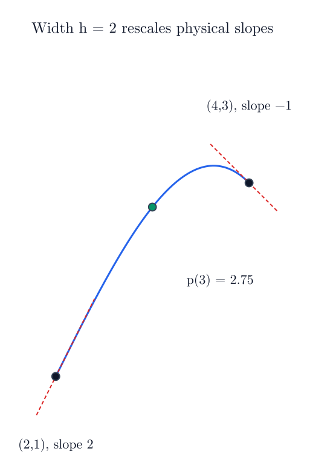
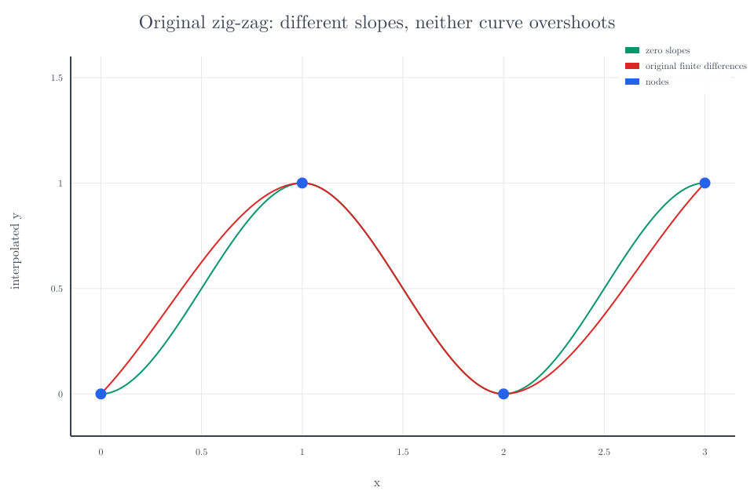
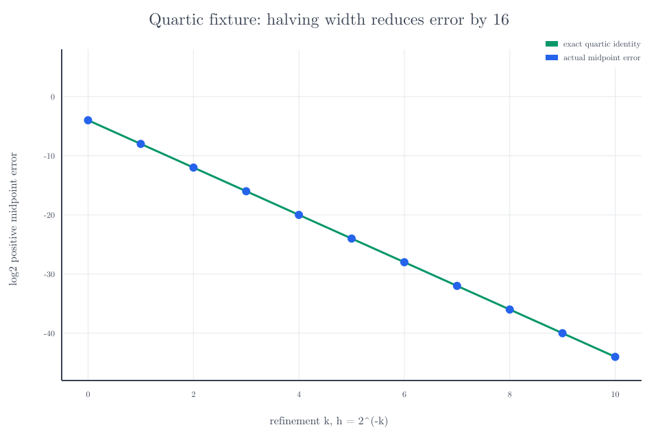
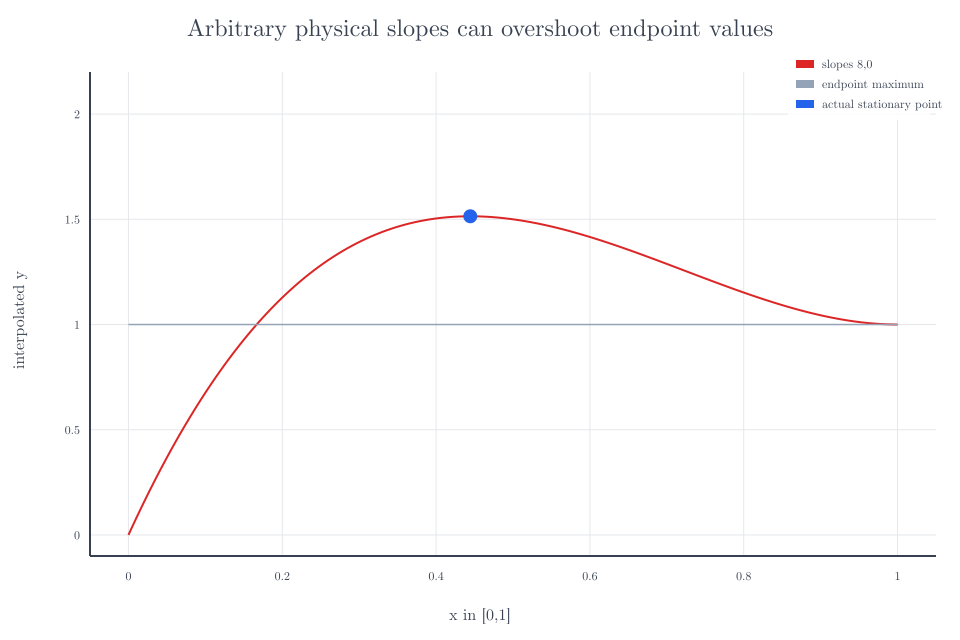

Cubic Hermite interpolation: values, slopes and interval width
Abstract
Construct a curve that passes through sampled values while matching a prescribed derivative at every node. Four endpoint constraints determine a cubic on each interval, but arbitrary slopes can overshoot and queries outside the node range require an explicit policy. This report follows actual basis contributions on a two-unit interval, retains the original four-node examples, and checks cubic reproduction and a quartic error identity. It distinguishes physical dy/dx slopes from normalized-coordinate derivatives, explains why the original tangent example stays bounded, and gives a separate genuine overshoot witness. The library extrapolates with its nearest end cubic rather than clamping queries.
A two-unit interval, checked by hand
Take nodes x=2,4, values y=1,3 and physical slopes 2,−1. At query x=3 the width is h=2 and t=1/2. The four basis values are 1/2,1/8,1/2,−1/8. After multiplying the tangent terms by h, their four contributions are 1/2,1/2,3/2,1/4, summing to 2.75. Omitting the width factors would impose different physical slopes.
The native trace below captures the selected interval, normalized coordinate, basis and weighted terms from the value-producing evaluation itself. The concept diagram plots the actual segment with its endpoint tangent directions.
#include <dm/dm.hpp>
int main() {
std::filesystem::create_directories("build");
const std::vector<double> xs{2, 4}, ys{1, 3}, ms{2, -1};
const auto e = dm::algorithms::hermite_evaluate(xs, ys, ms, 3);
std::print("| term | actual basis | actual weighted contribution |\n| ---: | ---: | ---: |\n");
for (std::size_t j = 0; j < 4; ++j)
std::print("| {} | {} | {} |\n", j, e.basis[j], e.terms[j]);
std::print("\nSelected interval {}; width {}; t {}; actual value {}; extrapolated {}.\n",
e.interval, e.width, e.t, e.value, e.extrapolated);
std::vector<double> q;
for (int j = 0; j <= 100; ++j)
q.push_back(2 + j / 50.);
const auto y = dm::algorithms::hermite_evaluate_many(xs, ys, ms, q);
dm::graphics::Diagram d(160, 1000);
dm::graphics::DiagramStroke curve;
curve.color = {37, 99, 235};
curve.width = 3;
std::vector<dm::graphics::DiagramPoint> points;
for (std::size_t j = 0; j < q.size(); ++j)
points.push_back({q[j], y[j]});
d.path(points, curve);
dm::graphics::DiagramStroke tangent;
tangent.color = {220, 38, 38};
tangent.width = 2;
tangent.dashed = true;
d.path({{1.8, .6}, {2.4, 1.8}}, tangent).path({{3.6, 3.4}, {4.3, 2.7}},
tangent);
d.ellipse({2, 1}, .04, .04, {15, 23, 42}).ellipse({4, 3}, .04, .04,
{15, 23, 42}).ellipse(
{3, e.value}, .04, .04, {5, 150, 105}).text({2, .3}, "(2,1), slope 2",
22).text({4, 3.8},
"(4,3), slope −1",
22).text(
{3.7, 2.0}, "p(3) = 2.75", 22).text({3, 4.6},
"Width h = 2 rescales physical slopes",
25).save_svg(
"build/hermite_terms.svg");
if (e.value != 2.75 || e.terms != std::array<double, 4>{.5, .5, 1.5, .25})
throw std::runtime_error("basis terms");
}| term | actual basis | actual weighted contribution |
|---|---|---|
| 0 | 0.5 | 0.5 |
| 1 | 0.125 | 0.5 |
| 2 | 0.5 | 1.5 |
| 3 | -0.125 | 0.25 |
Selected interval 0; width 2; t 0.5; actual value 2.75; extrapolated false.

Derive the four basis functions and uniqueness
Write the normalized cubic as P(t)=a+bt+ct²+dt³. Its four constraints are P(0)=y0, P(1)=y1, P′(0)=hm0 and P′(1)=hm1, since d/dx=(1/h)d/dt. Solving these four linear equations gives
For example, h00 has value 1 at t=0 and value 0 at t=1, with derivative zero at both ends; h10 has derivative 1 at t=0 and all three other endpoint constraints zero. The remaining two basis functions exchange endpoint roles. A difference between two candidate cubics would have double zeros at both endpoints and therefore be divisible by t²(t−1)². Its degree is at most 3, so it must vanish identically. This proves uniqueness and exact-arithmetic reproduction of any cubic with its correct endpoint derivatives.
Sharing one slope per node makes adjacent segments agree in value and first derivative: the piecewise curve is C1. Its second derivatives can jump, and arbitrary slopes do not guarantee monotonicity or no overshoot. Floating evaluations approximate these identities; they are not symbolic certificates or interval bounds.
Retain the original four-node examples
The original zig-zag nodes are x=(0,1,2,3), y=(0,1,0,1). Zero slopes give flat tangents at every node. The original finite-difference choice is (1,0,0,1): one-sided secants at the endpoints and centered differences inside this uniform grid. This is a specified slope rule, rather than a claim about every endpoint convention used for Catmull–Rom curves.
Both resulting curves stay in [0,1] here. On the first interval the finite-difference curve is −t³+t²+t, whose derivative is nonnegative on [0,1]; the middle uses a reversed smoothstep, and the last is −t³+2t² with nonnegative derivative. The old report's overshoot assertion for this particular fixture was incorrect. A sampled range check accompanies that algebraic conclusion below.
The same program retains the original independent cubic g(x)=x³−2x+1, with analytic slopes 3x²−2, and compares its values at 0.5,1.5,2.5. Cubic reproduction is a mathematical identity, while the printed differences are native floating diagnostics.
#include <dm/dm.hpp>
int main() {
std::filesystem::create_directories("build");
const std::vector<double> xs{0, 1, 2, 3}, ys{0, 1, 0, 1}, zero(4, 0), centered{1, 0, 0, 1};
std::vector<double> q;
for (int j = 0; j <= 300; ++j)
q.push_back(j / 100.);
const auto a = dm::algorithms::hermite_evaluate_many(xs, ys, zero, q);
const auto b = dm::algorithms::hermite_evaluate_many(xs, ys, centered, q);
const auto[amin, amax] = std::minmax_element(a.begin(), a.end());
const auto[bmin, bmax] = std::minmax_element(b.begin(), b.end());
std::print("Original sampled ranges: zero [{},{}]; finite differences [{},{}].\n",
*amin, *amax, *bmin, *bmax);
std::vector<double> gy, gm;
for (double x : xs) {
gy.push_back(x * x * x - 2 * x + 1);
gm.push_back(3 * x * x - 2);
}
std::print("\n| query | native cubic interpolation | cubic reference | difference |\n| ---: | ---: | " "---: | ---: |\n");
for (double x : {.5, 1.5, 2.5}) {
const auto e = dm::algorithms::hermite_evaluate(xs, gy, gm, x);
const double expected = x * x * x - 2 * x + 1;
std::print("| {} | {:.17g} | {:.17g} | {:.3g} |\n", x, e.value,
expected, e.value - expected);
if (std::abs(e.value - expected) > 1e-12)
throw std::runtime_error("cubic reproduction");
}
auto plot = dm::graphics::RPlot::create();
plot.line(q, a, "zero slopes", {5, 150, 105}, 2.).line(
q, b, "original finite differences", {220, 38, 38}, 2.).points(
xs, ys, "nodes", {37, 99, 235}, 7.).title("Original zig-zag: different slopes, neither curve overshoots").x_label("x").y_label("interpolated y").y_limits(-.2, 1.6).save_svg("build/hermite_original.svg");
if (*amin < 0 || *amax > 1 || *bmin < 0 || *bmax > 1)
throw std::runtime_error("original range");
}Original sampled ranges: zero [0,1]; finite differences [0,1].
| query | native cubic interpolation | cubic reference | difference |
|---|---|---|---|
| 0.5 | 0.125 | 0.125 | 0 |
| 1.5 | 1.375 | 1.375 | 0 |
| 2.5 | 11.625 | 11.625 | 0 |

Check the fourth-order remainder without invented error floors
For f with a continuous fourth derivative and exact endpoint values and slopes, the local error for a query inside[a,b] is
A proof uses repeated Rolle arguments on f−p minus a multiple of (x−a)²(x−b)², choosing the multiple to make an additional zero at x. Its fourth derivative then vanishes somewhere in the interval. The double zeros encode both value and derivative matching. This needs smoothness and accurate supplied derivatives; it is not a guarantee for arbitrary slope estimates or extrapolation.
For f(x)=x⁴ on [0,h], f−p=x²(x−h)² exactly. At x=h/2 the error is h⁴/16. Binary widths and dyadic query points make the short sequence below exactly representable, so the program checks that identity without logarithmically clamping zero differences.
#include <dm/dm.hpp>
int main() {
std::filesystem::create_directories("build");
std::vector<double> kx, actual, reference;
std::print("| refinement k | interval width | actual midpoint error | h^4/16 |\n| ---: | ---: | ---: | " "---: |\n");
for (int k = 0; k <= 10; ++k) {
const double h = std::ldexp(1., -k), h4 = h * h * h * h;
const auto e =
dm::algorithms::hermite_evaluate({0, h}, {0, h4},
{0, 4 * h * h * h}, h / 2);
const double truth =
std::pow(h / 2, 4), error = truth - e.value, expected = h4 / 16;
std::print("| {} | {:.12g} | {:.12g} | {:.12g} |\n", k, h, error,
expected);
if (error != expected || error <= 0)
throw std::runtime_error("quartic remainder");
kx.push_back(k);
actual.push_back(std::log2(error));
reference.push_back(-4 * k - 4);
}
auto plot = dm::graphics::RPlot::create();
plot.line(kx, reference, "exact quartic identity", {5, 150, 105}, 3.).points(kx, actual, "actual midpoint error", {37, 99, 235}, 6.).title("Quartic fixture: halving width reduces error by 16").x_label("refinement k, h = 2^(-k)").y_label("log2 positive midpoint error").y_limits(-48, 8).save_svg("build/hermite_error.svg");
}| refinement k | interval width | actual midpoint error | h^4/16 |
|---|---|---|---|
| 0 | 1 | 0.0625 | 0.0625 |
| 1 | 0.5 | 0.00390625 | 0.00390625 |
| 2 | 0.25 | 0.000244140625 | 0.000244140625 |
| 3 | 0.125 | 1.52587890625e-05 | 1.52587890625e-05 |
| 4 | 0.0625 | 9.53674316406e-07 | 9.53674316406e-07 |
| 5 | 0.03125 | 5.96046447754e-08 | 5.96046447754e-08 |
| 6 | 0.015625 | 3.72529029846e-09 | 3.72529029846e-09 |
| 7 | 0.0078125 | 2.32830643654e-10 | 2.32830643654e-10 |
| 8 | 0.00390625 | 1.45519152284e-11 | 1.45519152284e-11 |
| 9 | 0.001953125 | 9.09494701773e-13 | 9.09494701773e-13 |
| 10 | 0.0009765625 | 5.68434188608e-14 | 5.68434188608e-14 |

A genuine overshoot and an explicit extrapolation policy
On[0,1] with values 0,1 and slopes 8,0, the cubic is p(t)=6t³−13t²+8t. Its derivative vanishes at t=4/9 and 1, and p(4/9)=368/243>1. This is an actual overshoot witness from the same API. No automatic slope limiter is applied.
Queries outside the complete node range use the nearest end interval but retain their original x, hence t can be below 0 or above 1. For the zero-slope unit interval p(x)=3x²−2x³, querying x=2 gives −4, not the endpoint value 1. The next block prints that policy and checks shape, finite-domain and batch-output limits.
#include <dm/dm.hpp>
int main() {
std::filesystem::create_directories("build");
std::vector<double> q;
for (int j = 0; j <= 200; ++j)
q.push_back(j / 200.);
const auto values =
dm::algorithms::hermite_evaluate_many({0, 1}, {0, 1}, {8, 0}, q);
const auto peak =
dm::algorithms::hermite_evaluate({0, 1}, {0, 1}, {8, 0}, 4. / 9);
const auto outside =
dm::algorithms::hermite_evaluate({0, 1}, {0, 1}, {0, 0}, 2);
std::print("Actual overshoot p(4/9)={:.15g}; rational reference {:.15g}. Extrapolated x={} selects " "interval {}, t={}, value={}, flag {}.\n",
peak.value, 368. / 243, outside.x, outside.interval, outside.t,
outside.value, outside.extrapolated);
bool duplicate = false, cap = false, nan = false;
try {
(void) dm::algorithms::hermite_interpolate({0, 0}, {0, 1}, {0, 0}, 0);
} catch (const std::invalid_argument &) {
duplicate = true;
}
try {
(void) dm::algorithms::hermite_evaluate_many({0, 1}, {0, 1}, {0, 0},
{0, .5, 1}, 2);
} catch (const std::length_error &) {
cap = true;
}
try {
(void) dm::algorithms::hermite_evaluate_many({0, 1}, {0, 1}, {0, 0},
{0,
std::numeric_limits<
double>::quiet_NaN()}, 1);
} catch (const std::invalid_argument &) {
nan = true;
}
const auto exact =
dm::algorithms::hermite_evaluate_many({0, 1}, {0, 1}, {0, 0},
{0, .5, 1}, 3);
std::print("Duplicate nodes rejected {}; one-short query cap rejects {}; nonfinite query rejected " "before cap {}; exact cap returns {} values.\n",
duplicate, cap, nan, exact.size());
if (!duplicate || !cap || !nan || outside.value != -4 || peak.value <= 1)
throw std::runtime_error("controls");
auto plot = dm::graphics::RPlot::create();
plot.line(q, values, "slopes 8,0", {220, 38, 38}, 2.).line(
{0., 1.}, {1., 1.}, "endpoint maximum", {148, 163, 184}, 1.5).points(
{4. / 9}, {peak.value}, "actual stationary point", {37, 99, 235}, 7.).title("Arbitrary physical slopes can overshoot endpoint values").x_label("x in [0,1]").y_label("interpolated y").y_limits(-.1, 2.2).save_svg("build/hermite_controls.svg");
}Actual overshoot p(4/9)=1.51440329218107; rational reference 1.51440329218107. Extrapolated x=2 selects interval 0, t=2, value=-4, flag true. Duplicate nodes rejected true; one-short query cap rejects true; nonfinite query rejected before cap true; exact cap returns 3 values.

All entry points validate at least two strictly increasing finite nodes and equal-sized finite value/slope arrays. Repeated or unordered nodes and nonfinite queries are invalid. Finite endpoints can still have an overflowing width; normalized coordinates, basis terms, weighted contributions or final sums can overflow even with otherwise finite inputs. Such arithmetic throws rather than returning NaN or infinity. Input arrays are never sorted, clamped or mutated by these operations.
The scalar and fixed-size trace APIs validate all n nodes for each call, then
select an interval with O(log n) lookup; total cost is O(n+log n), constant
auxiliary storage and no heap allocation. Traces own fixed scalar arrays, need
no history cap and retain no input references. hermite_evaluate_many validates
nodes once and all q queries before any optional cap/allocation, then uses the
same producing kernel for O(n+q+q log n) work and O(q) output. Query order is
preserved, including repeats and extrapolation. The default complete output cap
is one million values, zero disabling that policy; it is not bytes, peak memory
or an input-node cap. Empty batches still validate nodes. No partial output
returns on failure, and independent calls share no mutable state.
Legacy hermite_interpolate remains available from interpolation_extra.hpp
and preserves ordinary finite output arithmetic and end-interval policy. The
other interpolation algorithms in that module retain their own contracts; this
report does not change their validation or slope rules.
What the examples establish
Matching values and physical slopes determines a unique cubic per interval. Width factors connect the basis to derivative units, and shared nodal slopes ensure C1 joins in exact arithmetic. The original cubic is reproduced, the quartic fixture isolates fourth-order local error, and a separate counterexample proves that unrestricted slopes can overshoot. Extrapolation, derivative error and floating arithmetic require explicit limits. An unrelated dataset would not strengthen these controlled numerical checks.
The canonical reference is [NIST DLMF §3.3(vi), Other Interpolation Methods](https://dlmf.nist.gov/3.3#vi), which identifies Hermite interpolation and its references; this report derives the two-endpoint basis, uniqueness and local remainder directly. The implemented arithmetic is the library's floating basis evaluation, not a symbolic or interval method.
Verification compares ordinary legacy results with a frozen implementation, exercises 625 cubic coefficient combinations on irregular nodes under sanitizers, and checks the dyadic quartic identity, original bounded curves, genuine overshoot and extrapolation. An independent rational polynomial solves the four endpoint constraints without reusing the native basis formula. API examples, complete programs, inspected figures and both exports are verified before retiring the original report.